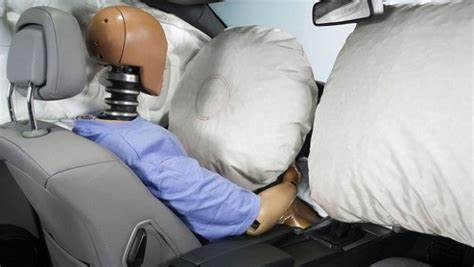

Clasificacion de la seguridad vial
Cuando hablamos sobre qué es seguridad vial también vale la pena ser claros y específicos en la clasificación del concepto. Podemos hablar de tres tipos:
Primaria o activa:
Tiene como misión principal evitar que los accidentes ocurran. Es aplicada a los conductores, peatones, pasajeros, vehículos y a las vías. Ejemplos claros de este tipo de seguridad primaria son las señales de tránsito, el correcto funcionamiento de cada uno de los sistemas del vehículo, además de prudencia, habilidad y destreza del conductor.
Secundaria o pasiva:
El objetivo de esta clasificación de la seguridad vial es reducir al máximo las consecuencias de un accidente en el momento en el que ocurre. Los ejemplos más precisos son el cinturón de seguridad y el airbag, elementos que harán que los impactos en caso de accidente sean menos graves.

Terciaria:
Aunque esta no es muy reconocida también hace referencia a reducir las consecuencias de un accidente después de ocurrido. Prevenir una explosión deteniendo el escape de gasolina o contar con SOAT y seguro todo riesgo para vehículo podrá atenuar los daños personales y materiales que traen consigo los accidentes de tránsito.
Plan de seguridad vial en Colombia
Según la Agencia Nacional de Seguridad Vial, 5614 personas perdieron la vida en 2020 en las vías del país. Esto incluye el fallecimiento de peatones, ciclistas, motociclistas y conductores de autos. Si sumamos las víctimas de los últimos 10 años, la cifra es realmente alarmante.
Esto a pesar de que en 2013 se consolidó un plan de seguridad vial que va hasta el 2021. Tiene como principios fundamentales: el valor de la vida, como máximo en cualquier circunstancia; convivencia, honestidad, rectitud, solidaridad, compromiso y responsabilidad. También son fundamentales la educación vial y la autorregulación para cumplir este proyecto.
El objetivo fundamental del plan de seguridad vial en Colombia es la reducción de la mortalidad a través de un ajuste a las políticas de seguridad. Factores como la formación al ciudadano, la atención pertinente a las víctimas y el monitoreo y mejora de la infraestructura son indispensables en el camino de crear conciencia ciudadana. Por otro lado, la investigación alrededor del tema, la evaluación y la auditoría del parque automotor del país hacen que se consolide con un plan integral.
Este plan fue ordenado por el Código Nacional de Tránsito Terrestre a través de la Ley 769 de 2002. Cada uno de estos elementos nos brindan aportes para comprender qué es la seguridad vial. Al final del ciclo se debe evaluar la efectividad de las medidas aplicadas y su posible extensión.